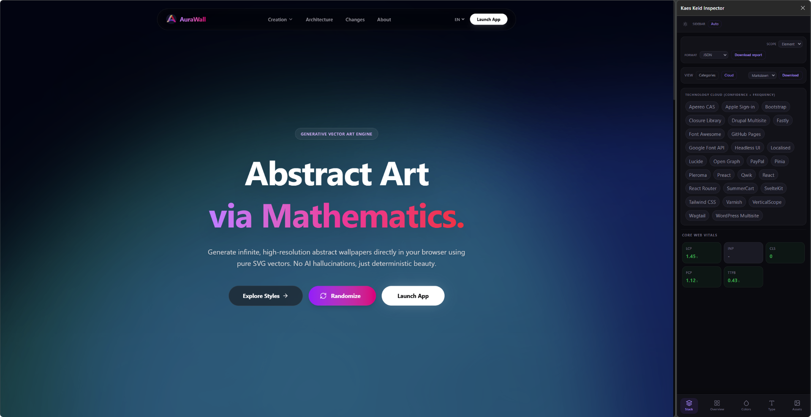
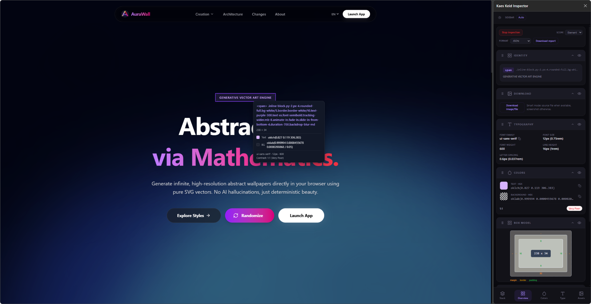
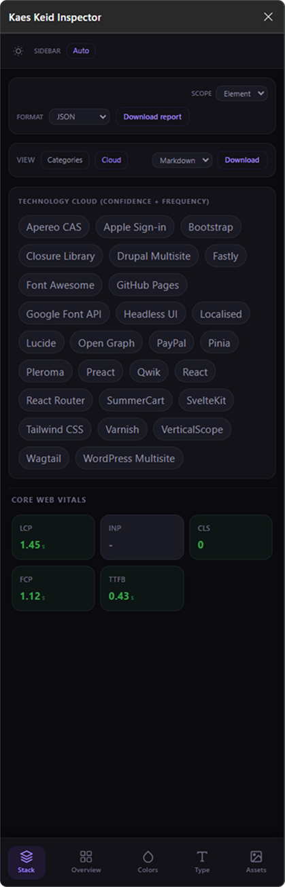

01Element
Read the selected UI.
Inspect box model, spacing, borders, shadows, filters, transitions, type, color, and contrast from hovered elements.
Chrome / Edge extension
Kaes Keid reveals layout, typography, color, assets, performance signals, and stack fingerprints directly from the page you are viewing.
What it does
Simple enough for quick checks, deep enough for design audits and implementation notes.
Inspect box model, spacing, borders, shadows, filters, transitions, type, color, and contrast from hovered elements.
Group color roles, typography patterns, image assets, SVGs, backgrounds, and layout structure into useful summaries.
Identify frontend frameworks, styling systems, analytics, CMS, infrastructure, services, and integrations from multiple signals.
Product preview
Use Stack for technology fingerprints, then switch tabs to inspect the visual layer. Export the current element, tab, or full scan when the evidence is ready.



Local install
The extension is free and open source. Build locally, load the `dist/` folder, and run it on Chrome or Edge.
Get the source and move into the project folder.
git clone https://github.com/mafhper/kaes-keide-inspector.git
cd kaes-keide-inspectorInstall dependencies with Bun and generate the browser bundle.
bun install
bun run buildOpen your browser extensions page and select the compiled folder.
chrome://extensions
Developer mode
Load unpacked: dist/